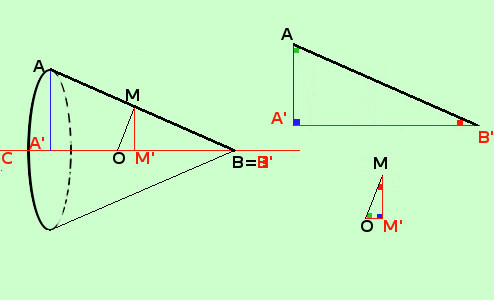

|
 I triangoli considerati sono AA'B' e' simile a MOM' Li stacco per farteli vedere meglio e metto dentro gli angoli congruenti un quadratino con lo stesso colore Seguendo il metodo indicato negli esercizi sulla similitudine scriviamo A A' B' O M' M quindi posso scrivere la proporzione completa AA' : OM' = A'B' : M'M = AB' : OM e scegliere poi quella che mi interessa AB:MO= A'B':MM' ti ricordo che B e B' sono lo stesso punto |